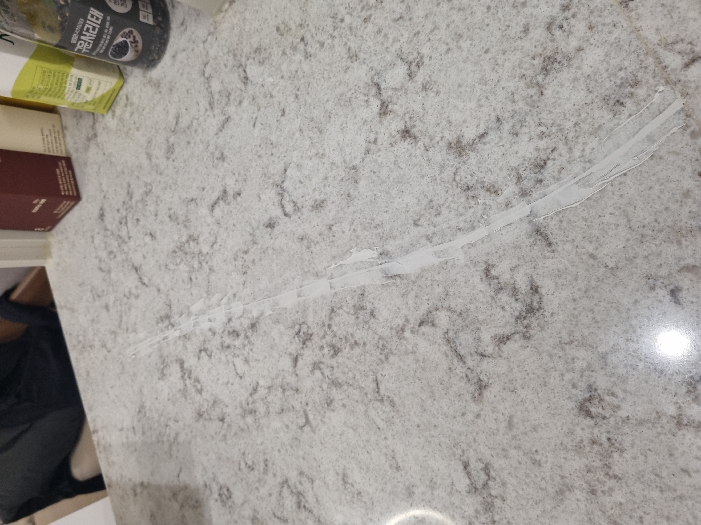
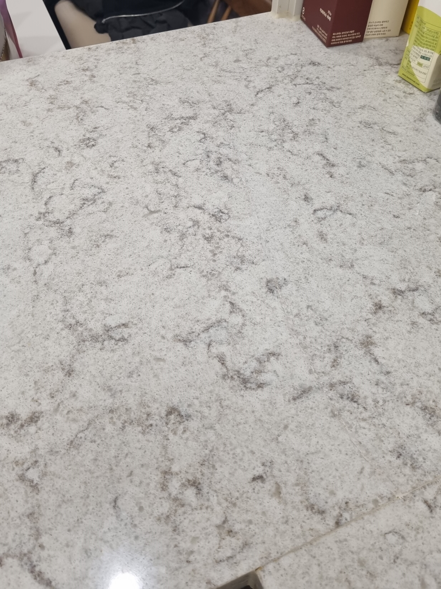
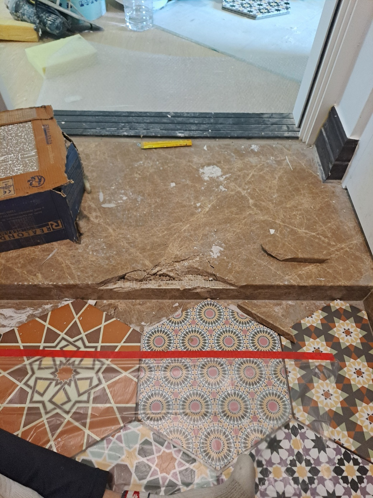
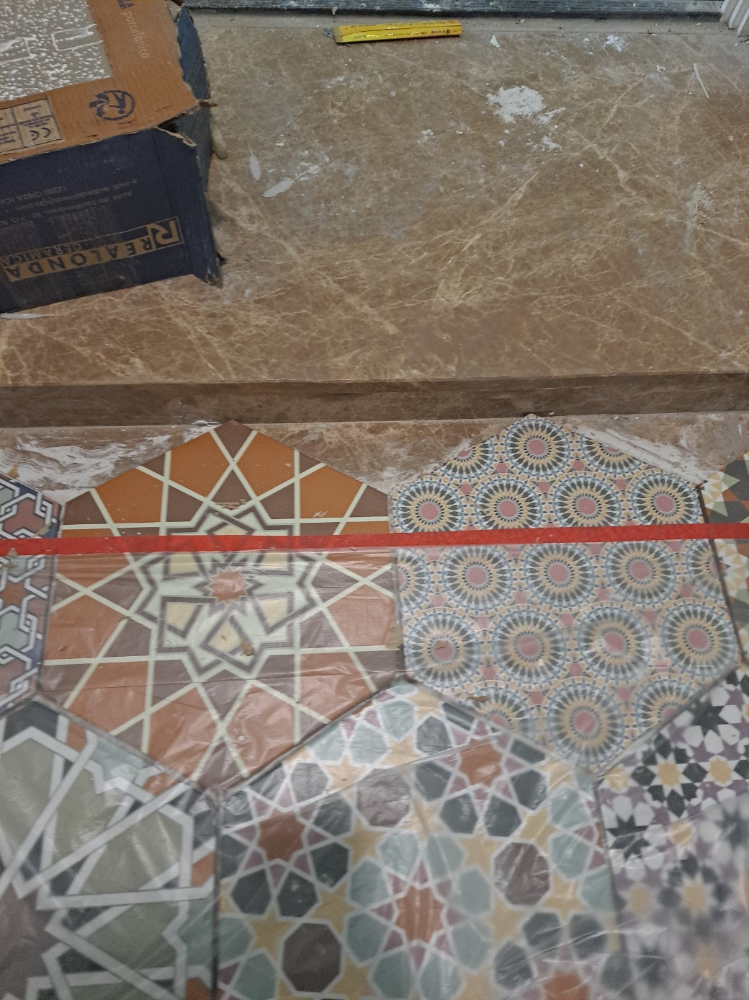

CASE 01
천연대리석 식탁 금 수리
밝은 천연대리석 식탁 상판을 가로지르는 긴 균열이 생긴 상태였습니다. 균열 내부를 보강한 뒤 주변의 밝은 바탕색과 회색 석재 무늬가 자연스럽게 이어지도록 복원했습니다.


천연대리석 식탁에 긴 금이 생기고 현관 디딤석 앞부분이 크게 깨진 현장입니다. 식탁 구매업체에서는 상판 전체 교체만 가능하다고 안내해 비용 부담이 컸고, 현관 디딤석은 파손 범위가 커서 전문업체를 찾던 중 클린멋쟁이에 복원을 의뢰하셨습니다.
밝은 천연대리석 식탁 상판을 가로지르는 긴 균열이 생긴 상태였습니다. 균열 내부를 보강한 뒤 주변의 밝은 바탕색과 회색 석재 무늬가 자연스럽게 이어지도록 복원했습니다.


현관 디딤석 앞부분이 여러 조각으로 떨어질 만큼 크게 파손된 상태였습니다. 남은 구조와 파손 조각을 확인하고 내부를 튼튼하게 보강한 뒤 형태, 높이, 색상과 결을 맞춰 마감했습니다.


손상이 국소적이고 기존 석재를 살릴 수 있다면 전체 철거와 교체 없이 필요한 부분을 보강하고 복원할 수 있습니다.
멀쩡한 부분과 설치 구조는 그대로 두고 손상 부위를 중심으로 복원합니다.
새 식탁 상판이나 디딤석 전체 교체보다 합리적인 방법을 검토할 수 있습니다.
대규모 철거와 재설치 없이 현장에서 비교적 빠르게 마무리할 수 있습니다.
천연석 특유의 바탕색과 불규칙한 무늬를 확인하며 이질감을 줄입니다.
보이는 표면만 메우는 것이 아니라 파손 상태에 맞춰 내부 강도와 형태를 먼저 잡고, 색상과 석재 무늬를 재현합니다.
주변을 보호하고 균열 깊이, 파손 범위와 남은 조각을 확인합니다.
약해진 부분과 이물질을 정리해 보강재가 안정적으로 자리 잡게 합니다.
균열과 깨진 내부를 보강하고 원래 모서리와 표면 형태를 복원합니다.
주변 대리석의 바탕색과 석재 결을 관찰해 현장에서 맞춥니다.
단차와 거친 부분을 정리하고 여러 각도에서 복원 상태를 확인합니다.
사진뿐 아니라 영상으로 파손 범위와 복원 후 모습을 비교해보세요.
“식탁을 바꾼 것처럼 보수한 티가 안 나네요! 합리적인 가격에 보수 퀄리티가 너무 좋아요! 현관 디딤석은 못 쓸 줄 알았는데 튼튼하게 보수가 되네요~ 정말 감사합니다!”
| 비교 항목 | 부분복원 | 전체 교체 |
|---|---|---|
| 비용 | 손상 부위 중심으로 비교적 부담이 적음 | 자재·철거·재설치로 부담이 큼 |
| 작업시간 | 현장 상태에 따라 비교적 짧음 | 제작과 교체 일정이 추가될 수 있음 |
| 생활 불편 | 작업 범위가 작아 불편을 줄일 수 있음 | 운반·철거와 재설치가 필요함 |
| 완성도 | 기존 색상과 무늬에 맞춰 자연스럽게 복원 | 새 자재로 전체 표면이 교체됨 |
| 효과 | 기존 대리석을 살리고 파손부를 보강 | 심한 구조 손상을 근본적으로 교체 |
전체 모습과 파손 부위를 함께 보내주시면 석재 종류와 손상 상태를 확인해 상담합니다.